library(ggplot2)
library(patchwork)
p1 <- ggplot(mpg) +
geom_point(aes(x = displ, y = hwy))
p2 <- ggplot(mpg) +
geom_bar(aes(x = as.character(year), fill = drv), position = "dodge") +
labs(x = "年份")
p3 <- ggplot(mpg) +
geom_density(aes(x = hwy, fill = drv), colour = NA) +
facet_grid(rows = vars(drv))
p4 <- ggplot(mpg) +
stat_summary(aes(x = drv, y = hwy, fill = drv),
geom = "col", fun.data = mean_se) +
stat_summary(aes(x = drv, y = hwy),
geom = "errorbar", fun.data = mean_se, width = 0.5)資料分析
第九章：排列圖形
劉昱佑
實踐大學
2026-06-06
排列圖形
排列圖形
ggplot2 背後的文法是圍繞著建構單一張圖而設計的。分面提供了一種把多個子視圖嵌入單一視覺化中的機制，但所有分面面板都共享相同的資料、圖層與尺度。在實務上，許多分析敘事需要把全然獨立的圖並排或堆疊放置，以講述一個連貫的故事。
雖然圖總是可以在版面應用程式中手動拼裝，但這樣做既不可重現也沒有效率。數個 R 套件解決這個需求；本章聚焦於 patchwork 套件，它提供了最具表達力、且與 ggplot2 一致的 API。提供重疊功能的相關套件包括 cowplot、gridExtra 與 ggpubr。
本章路線圖
- 第 9.1 節——把圖並排排列：
+、|與/運算子；plot_layout()；修改已拼裝的圖；以及plot_annotation()。 - 第 9.2 節——用
inset_element()把圖疊加成嵌入圖。 - 第 9.3 節——總結與進一步資源。
準備範例圖
本章全程將使用四張 mpg 資料集的圖：
把圖並排排列
把圖並排排列
在其核心，patchwork 多載了 + 運算子來組合 ggplot 物件。把兩張圖放在 + 的兩側，便把它們拼裝成一個聯合的呈現：
當沒有明確指定布局時，patchwork 套用與 facet_wrap() 相同的啟發式來決定列數與欄數。加入三張圖會產生 1 × 3 的格網；四張圖則產生 2 × 2 的格網：
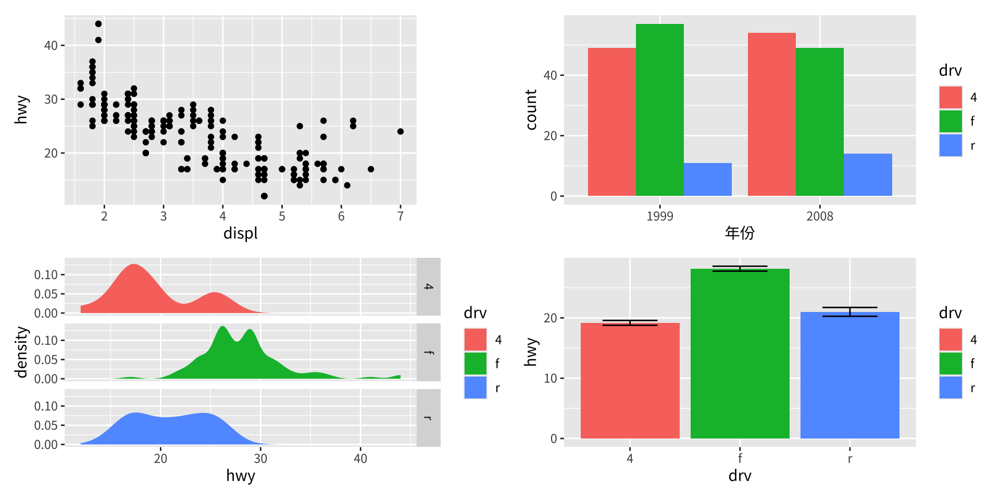
自動對齊
patchwork 把所有拼裝面板的繪圖區域加以對齊。在上面 2 × 2 的例子中，請注意：
- 四個繪圖面板共享對齊的左右邊緣。
- 兩個左側面板的 y 軸標題在垂直方向上對齊，即使
p3的軸刻度標籤比p1的更寬。 - 分面圖（例如
p3）被正確處理，無須任何手動調整。
這種自動對齊是 patchwork 相較於手動版面方法的關鍵優勢之一。
掌控布局
plot_layout()——明確的格網規格
覆寫預設布局最直接的方式，是把 plot_layout() 附加到拼裝好的圖上。它的 ncol 與 nrow 引數分別設定欄數與列數：
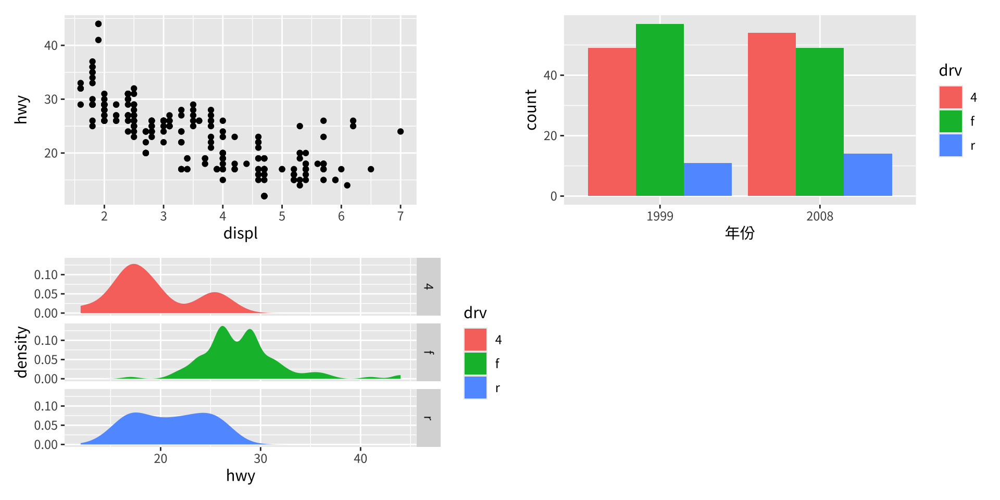
| 與 / 運算子——單列與單欄的捷徑
兩個專用運算子使常見的排列更易讀：
p1 | p2——強制單一列（所有圖水平放置）。p1 / p2——強制單一欄（所有圖垂直堆疊）。
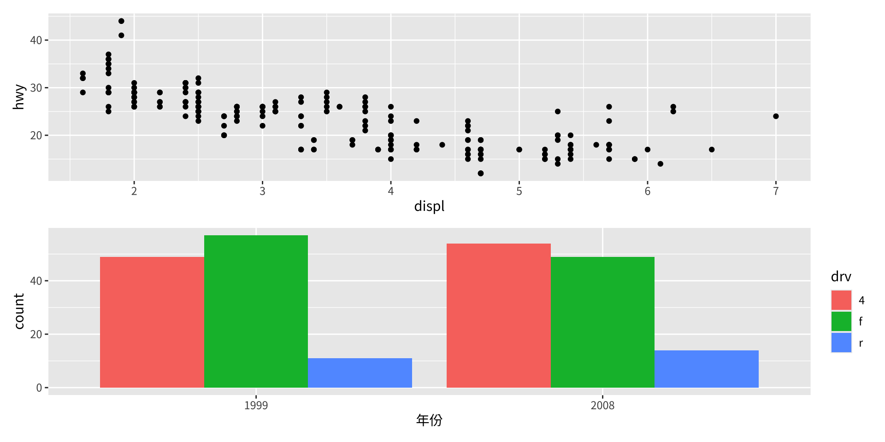
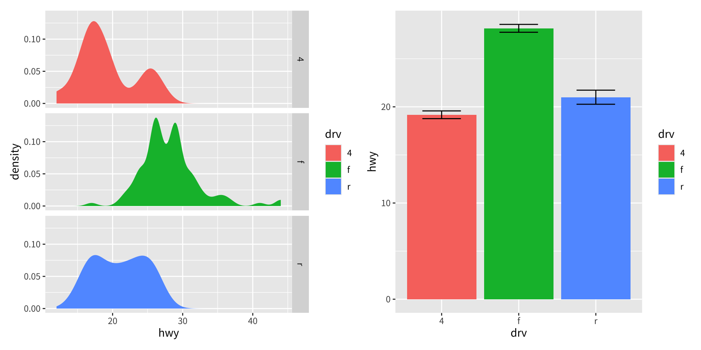
在底層，| 與 / 分別是 plot_layout(nrow = 1) 與 plot_layout(ncol = 1) 的語法糖，但使用它們能讓人在閱讀程式碼時立即看清布局的預期結構。
巢狀布局
| 與 / 運算子可巢狀在括號內，以建構複雜、非均勻的布局：
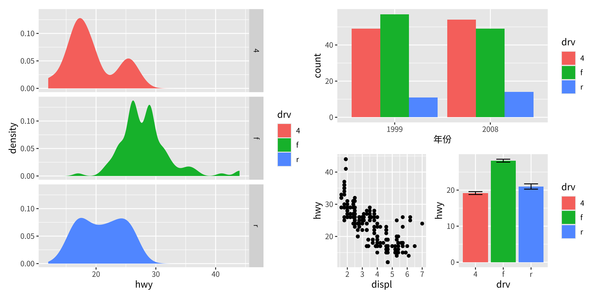
由左至右閱讀這個表達式：p3 占據圖的左半；右半在垂直方向被切分為上方的 p2 與下方 p1 與 p4 的並排排列。
design——自由形式的布局規格
對於無法以巢狀的列與欄描述的布局，plot_layout() 接受一個 design 引數——一個多行的字元字串，其中每個字母識別一張圖，而 # 標記一個空白儲存格：
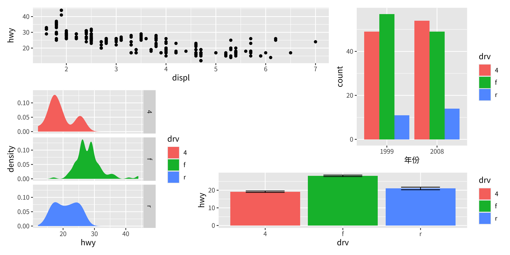
每個字母依各圖以 + 加入的順序對應到一張圖。在這裡：p1 橫跨左上的兩個儲存格，p2 占據右欄橫跨第 1 與第 2 列，p3 橫跨第 2 與第 3 列的左欄，而 p4 橫跨右下的兩個儲存格。
收集圖例——guides = "collect"
當多個面板共享相同的美學映射時，它們的圖例完全相同，全部顯示出來會浪費空間。在 plot_layout() 中設定 guides = "collect"，會把所有指引收集到單一位置，移除完全重複者，並依全域主題定位它們：
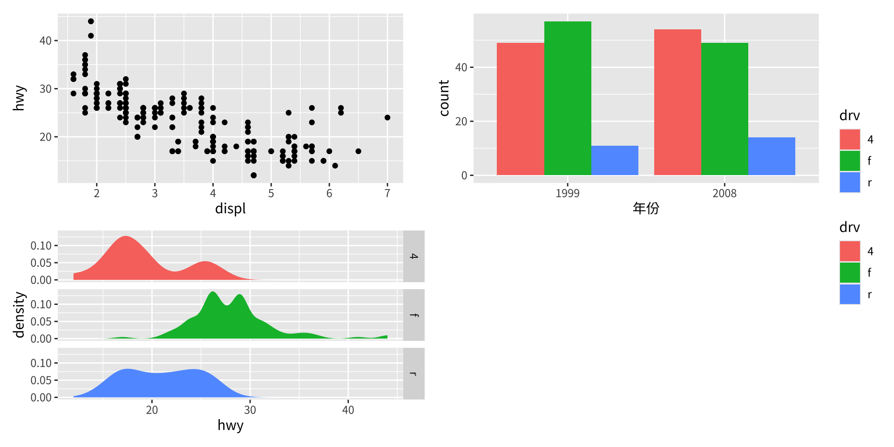
guide_area()——把收集到的指引放進空白處
如果布局包含一個空白儲存格（design 字串中的 #），那個空間可被用來容納收集到的指引，而非把它們放在圖的邊界之外。guide_area() 專為此保留一個圖大小的位置：
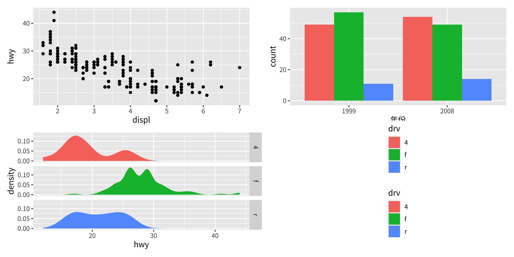
2 × 2 格網中的第四個位置如今被收集到的圖例占據，而非空白的留白。
修改子圖
用 [[]] 索引個別面板
由於拼裝好的圖在被呈現之前仍是標準的 ggplot 物件，個別的子圖可用 [[]] 雙中括號索引擷取、修改並重新插入。索引對應到該圖在拼裝中的位置（由左至右、由上至下）：
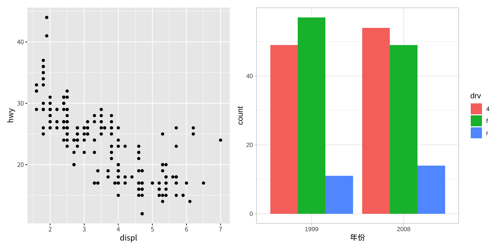
p12[[2]] 取得第二張圖（p2），套用 theme_light()，並把修改後的版本存回位置 2。
& 運算子——把修改套用到所有子圖
逐一修改每個子圖很冗長。& 運算子把任何 ggplot2 的添加——主題、尺度、座標系統——同時廣播到拼裝中的每一個子圖：
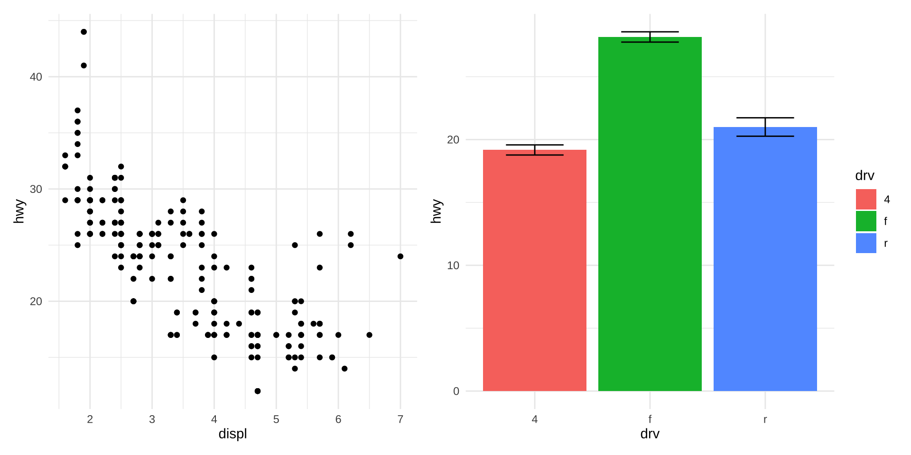
用 & 同步座標軸
& 在強制讓顯示相同變數的面板共享同一軸範圍時特別有用。把相同的 scale_y_continuous() 套用到所有圖，可確保 y 軸能直接比較：
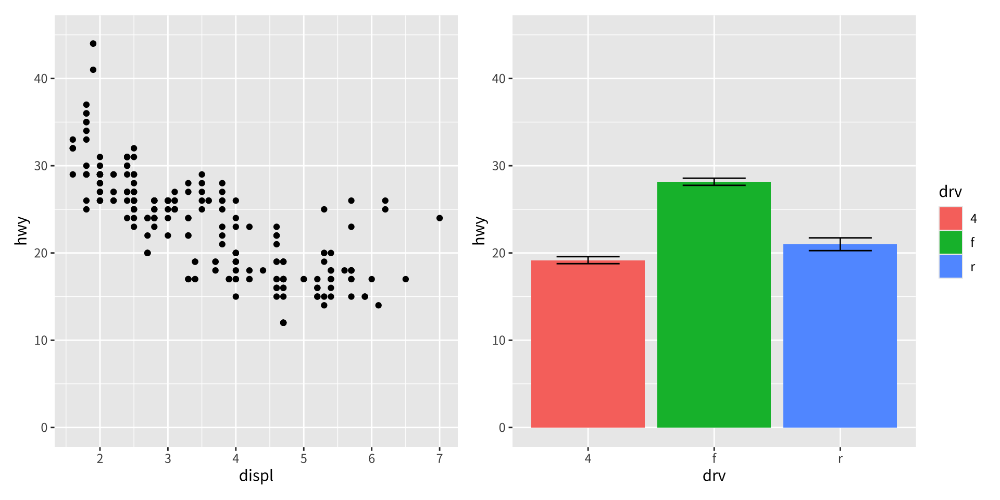
加上標註
plot_annotation()——整個拼裝的標題與圖說
一旦多張圖被組合，它們便作為單一個視覺單元運作。描述這個複合圖——而非任何個別面板——的標題、副標題與圖說，應該用 plot_annotation() 附加到拼裝上：
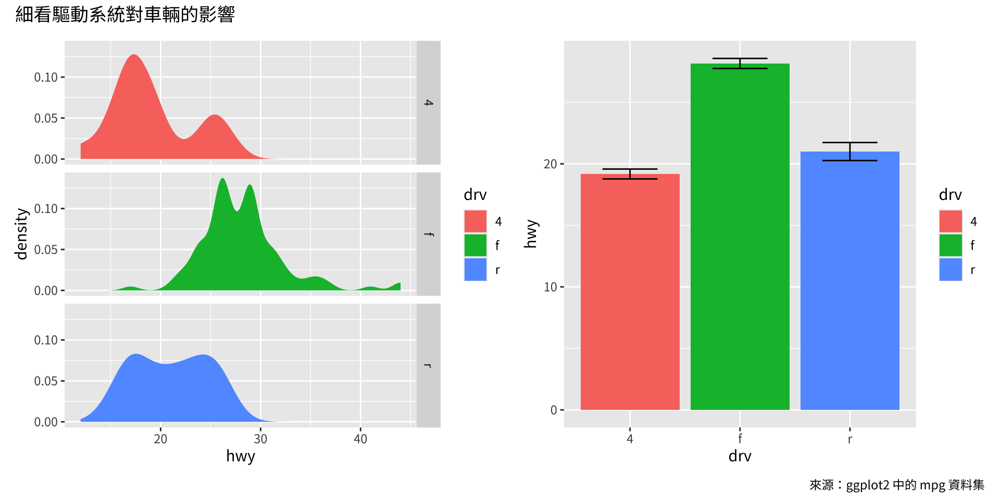
為標註文字套用主題
plot_annotation() 的 theme 引數控制複合層級之標題、副標題與圖說的字體樣式，獨立於子圖的主題之外：
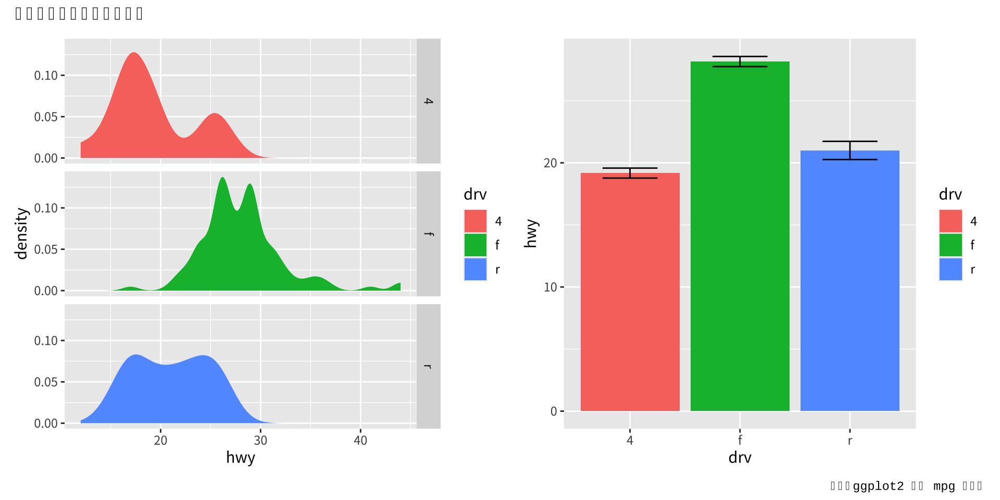
要一步把相同的主題同時套用到標註文字與所有子圖面板，請用 & 搭配一個主題物件。這會同時修改全域主題（它支配標註的字體）與每個子圖的主題：
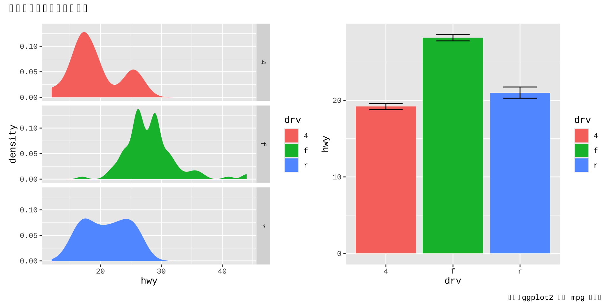
tag_levels——自動的子圖標籤
在科學出版品中，多面板圖慣以字母或數字（A、B、C…… 或 I、II、III……）標示，使圖說能指涉特定面板。patchwork 用 plot_annotation() 的 tag_levels 引數把這自動化：
其他可接受的值有 "A"（大寫拉丁字母）、"a"（小寫拉丁字母）與 "1"（阿拉伯數字）。
巢狀的標籤層級
對於包含巢狀 patchwork 的拼裝，可用 plot_layout(tag_level = "new") 在內層拼裝上啟用第二個標示層級。plot_annotation() 的 tag_levels 引數於是接受一個向量，指定每一層級的標示方案：
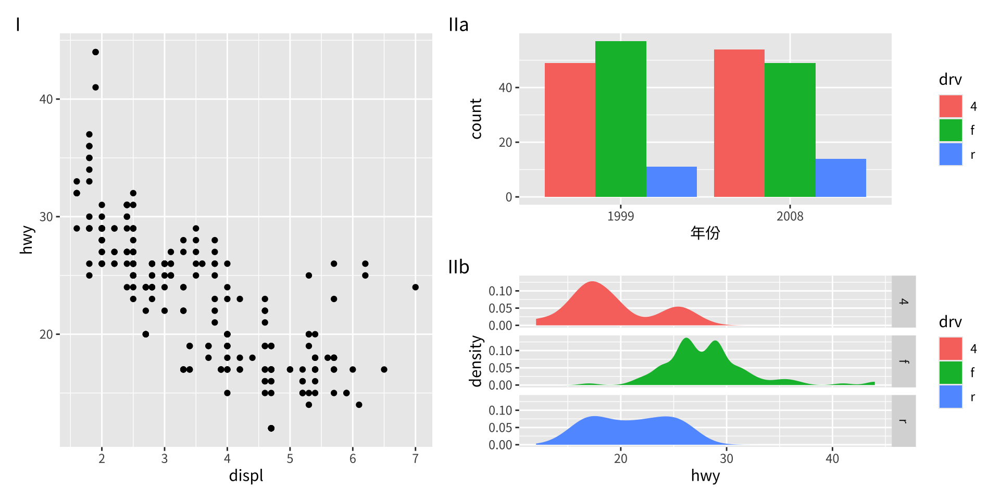
外層使用大寫羅馬數字（I、II、……），內層使用小寫拉丁字母（a、b、……），為兩個巢狀面板產生諸如「IIa」與「IIb」的標籤。
把圖疊在彼此之上
把圖疊在彼此之上
並排布局把圖放在頁面互不重疊的區域。一個截然不同的使用情境是嵌入圖（insets）——放置在較大背景圖之上的小型輔助圖。patchwork 透過 inset_element() 函式處理這點。
inset_element() 把一張圖標記為要疊加在拼裝中緊接在前那張圖上的嵌入圖。它的四個必要引數指定嵌入圖的邊界：
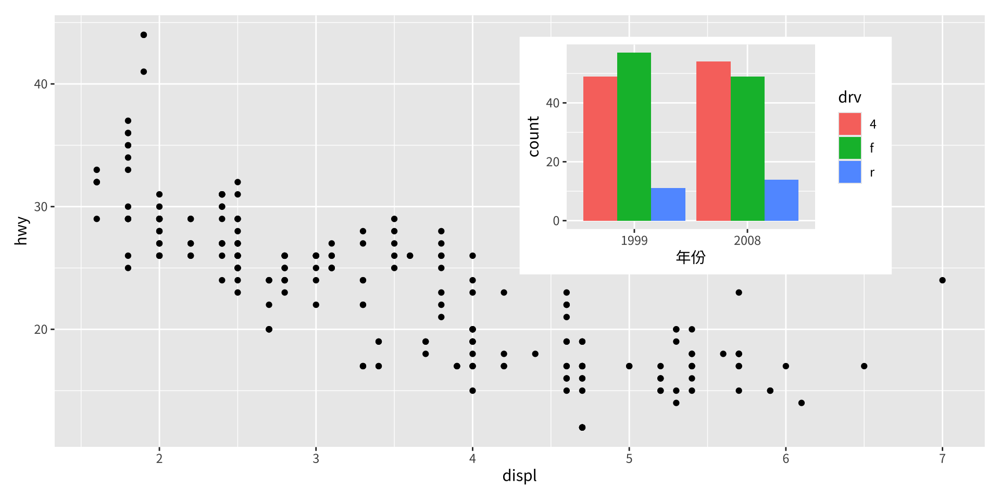
位置單位與 align_to 引數
預設情況下，left、right、top 與 bottom 以 npc（標準化父座標，Normalised Parent Coordinates）表示，它們在背景圖的面板區域上從 0 跑到 1。要把嵌入圖相對於完整繪圖區域（包括軸標題與標籤）定位，請設定 align_to = "full"。
任何 grid::unit() 類型都被接受，使精確的度量定位成為可能。下面的例子把嵌入圖恰好放在完整圖右上角 15 公釐處：
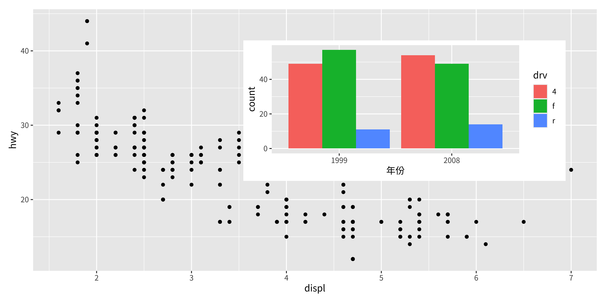
嵌入圖不限於單一 ggplot
任何 wrap_elements() 能處理的圖形物件——包括一個巢狀的 patchwork 拼裝——都可作為嵌入圖。下面的例子把一個堆疊的雙面板 patchwork（p2 / p4）嵌入到 p1 上：
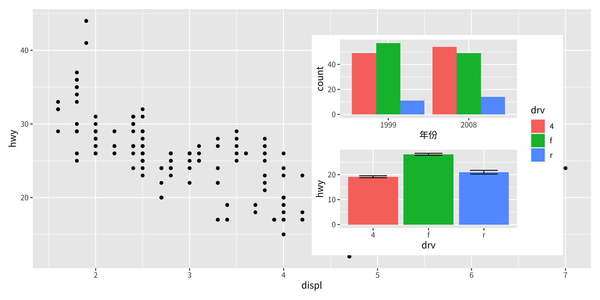
拼裝後修改嵌入圖
嵌入圖在呈現之前都仍是活的 patchwork 子圖，因此 & 運算子會同時把修改套用到背景圖與嵌入圖：
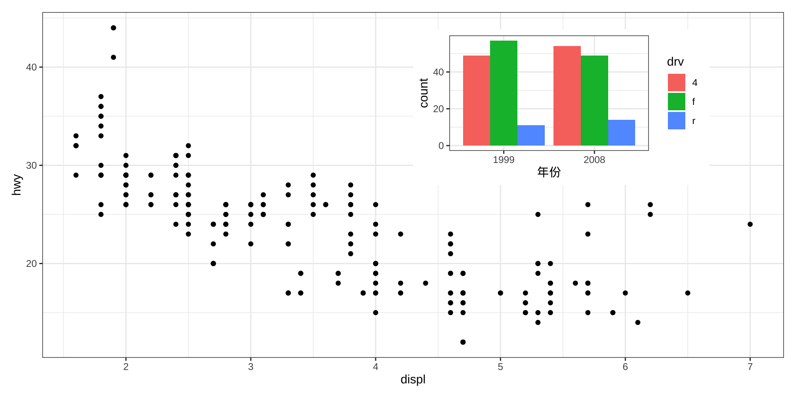
自動標示也適用於嵌入圖
透過 plot_annotation(tag_levels = ...) 指派的子圖標籤，套用到嵌入圖的方式與套用到一般並排面板的方式相同：
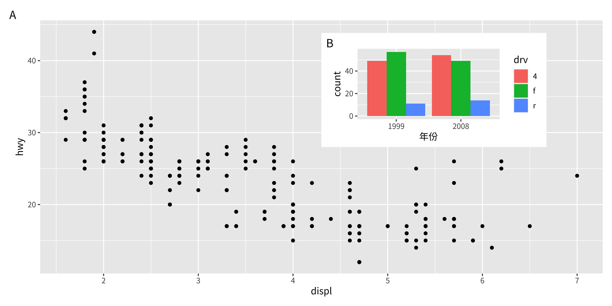
背景圖與嵌入圖都得到一個標籤，使它們能在圖說中被個別指涉。
收尾
收尾
本章介紹了 patchwork 套件為組合多面板圖所提供的主要工具：
| 運算子／函式 | 用途 |
|---|---|
p1 + p2 |
把圖放在一起（自動布局） |
p1 \| p2 |
強制單一列 |
p1 / p2 |
強制單一欄 |
plot_layout() |
控制 ncol、nrow、design、guides |
guide_area() |
為收集到的指引保留一個儲存格 |
p[[i]] |
擷取／替換個別子圖 |
& |
把修改廣播到所有子圖 |
plot_annotation() |
加上標題、圖說與自動標籤 |
inset_element() |
把圖疊加成嵌入圖 |
patchwork 另外透過 wrap_elements() 支援非 ggplot 的圖形物件（基礎 R 圖形、grid grob），並提供一個替代的布局建構子 area()，用於以程式化方式產生複雜的設計。所有這些功能的完整文件與完整範例可見於 https://patchwork.data-imaginist.com。
版權聲明
版權聲明。 本教材改編自 ggplot2: Elegant Graphics for Data Analysis (3e)。所有權利均由原作者與出版者保留。
僅供非商業用途。 本教材嚴格限定用於教育目的，不得用於商業獲利。
適當標註出處。 任何對本教材的重製、散布或使用，都必須適當標註原始出處。

ggplot2: Elegant Graphics for Data Analysis